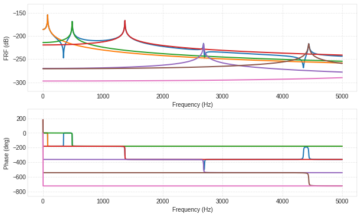

In [1]:
%matplotlib inline
import matplotlib.pyplot as plt
import vibration_toolbox as vtb
import numpy as np
In [33]:
w, x, U = vtb.euler_beam_modes(bctype = 3)
plt.plot(x,U[:,2],'-')
Out[33]:
[<matplotlib.lines.Line2D at 0x7fb6a7a62c18>]

In [36]:
fout, H = vtb.euler_beam_frf(xin = .1, xout = .3, fmax = 5000, zeta = 0.001)

In [38]:
# This interactivity doesn't work on my Mac as of Oct 12, 2017, but works on linux
from ipywidgets import interact, interactive, fixed, interact_manual
def ebi(xin=.4,xout=.4):
w, v = vtb.euler_beam_frf( xin = xin, xout = xout, fmax = 5000, zeta = 0.001)
print(xin)
plt.show()
In [39]:
w = interactive(ebi, xin = (0.0,.4, 0.0005), xout = (0.0,.4, 0.0005))
display(w)
In [ ]: